#2807 Wayne's World 2
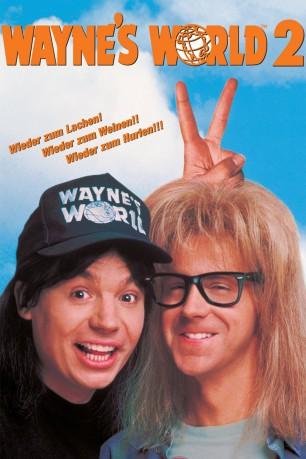 
 IMDB-Wertung: 6.2 / 10
IMDB-Wertung: 6.2 / 10  Metascore: 60
Metascore: 60 
Wayne ist in einer schweren Krise: Er fragt sich, was der Sinn seines Lebens ist. Die Antwort gibt ihm Jim Morrison, dem er bei einer Vision begegnet: Wayne soll in Aurora ein gigantisches Rockkonzert veranstalten – Waynestock! Ein nicht ganz einfaches, aber äußerst komisches Unterfangen…
Jahr: 1993
Dauer: 94 Minuten
FSK: 6
Land: USA Studio: Paramount PicturesTonspuren: DD2.0 - ,
Untertitel: Englisch,
Auflösung: 1080p (1920x1080) Größe: 8396 MB
Genre: Musik, Komödie
Regisseur: Stephen Surjik
Drehbuch: Mike Myers, Mike Myers, Bonnie Turner, Terry Turner
Soundtrack: Carter Burwell
Darsteller:
 Mike Myers als Wayne Campbell
Mike Myers als Wayne Campbell- 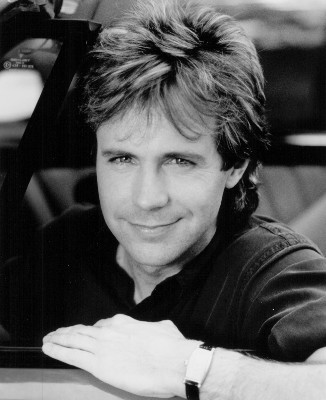 Dana Carvey als Garth Algar
 Christopher Walken als Bobby Cahn
Christopher Walken als Bobby Cahn- 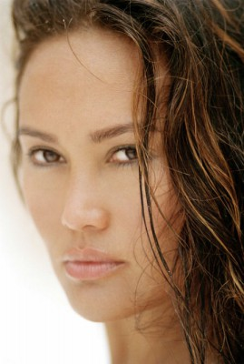 Tia Carrere als Cassandra Wong
- Chris Farley als Milton
 Ralph Brown als Del Preston
Ralph Brown als Del Preston James Hong als Jeff Wong
James Hong als Jeff Wong- 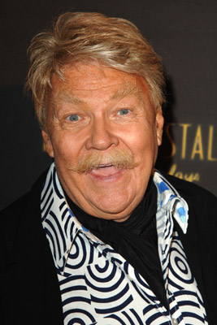 Rip Taylor als Rip Taylor
- Steven Tyler als Steven Tyler - Aerosmith Singer
- Joe Perry als Joe Perry - Aerosmith Guitarist
- Joey Kramer als Joey Kramer - Aerosmith Drummer
- 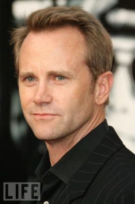 Lee Tergesen als Terry
- Richard Epper als Guy at Concert
- Jenny McShane als Girl at Concert
- Duke Valenti als Security Guy
- 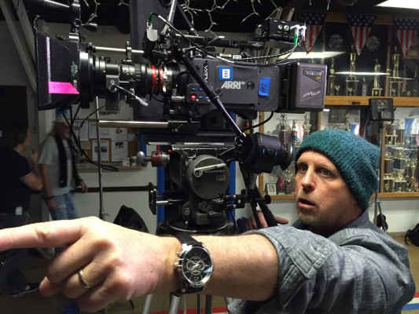 Gavin Grazer als Scott
 Googy Gress als Gate Security Guy
Googy Gress als Gate Security Guy- 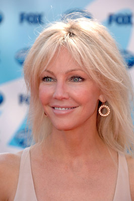 Heather Locklear als Heather Locklear
 Bob Odenkirk als Concert Nerd
Bob Odenkirk als Concert Nerd- 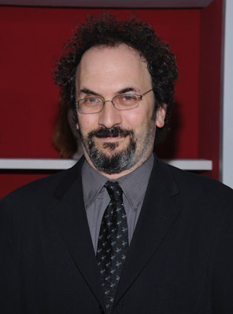 Robert Smigel als Concert Nerd
- Larry Sellers als Naked Indian
- Michael A. Nickles als Jim Morrison
- George Foster als Lead Guitarist
 Kevin Pollak als Jerry Segel
Kevin Pollak als Jerry Segel- Olivia d'Abo als Betty Jo
- 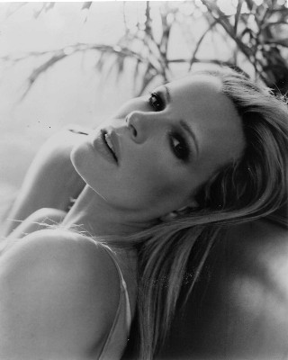 Kim Basinger als Honey Horneé
- Matthew Kenna als Roadie
- Sean Michael Guess als Roadie
- 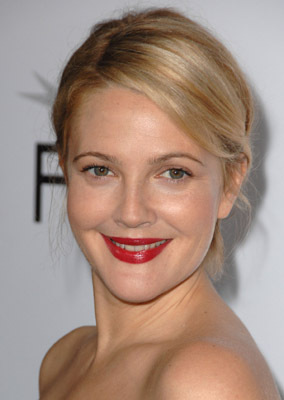 Drew Barrymore als Bjergen Kjergen
 Harry Shearer als Handsome Dan
Harry Shearer als Handsome Dan- 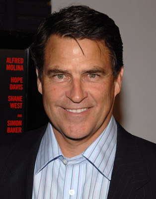 Ted McGinley als Mr. Scream
- 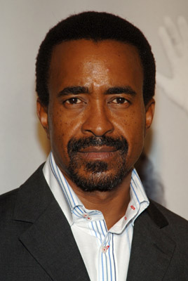 Tim Meadows als Sammy Davis, Jr.
- 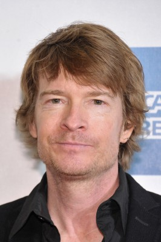 Scott Coffey als Heavy Metaller
- 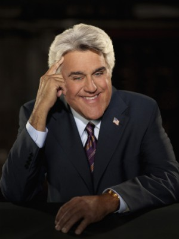 Jay Leno als Jay Leno
- Al Hansen als Bad Actor
 Charlton Heston als Good Actor
Charlton Heston als Good Actor- 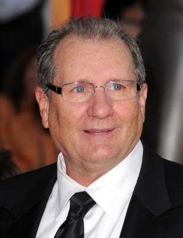 Ed O'Neill als Glen, Mikita's Manager
- Carlo Corazon als Aerosmith Fan at the Concert , uncredited
- Priscilla Cory als Pretty Brunette at Concert , uncredited
- Sean T. James als Backstage Security Guard , uncredited
- Joe Martinez als Red Licorice Guy , uncredited
- 'Diamond' Tim Pleshaw als Waynestock Fan , uncredited
 Craig Richards als Kenny G Fan , uncredited
Craig Richards als Kenny G Fan , uncredited- Shawn Wilson als Security Guard , uncredited
- Brad Whitford als Brad Whitford- Aerosmith Guitarist
- Tom Hamilton als Tom Hamilton - Aerosmith Bassist
- Dan Bell als Neil
- Benny Graham als Security Guy
- Joe Liss als Chicken Guy
 Bobby Slayton als Watermelon Guy
Bobby Slayton als Watermelon Guy
Datei: X:\2-Dilogie(N-Z)\Wayne's World\Wayne's World 2 (1993, FSK6, 1920x1080).mkv seit 18.12.2015
Festplatte: HD Collection-2(A-Z)-3(A-M)
 Alle Filme aus Gruppe '2-Dilogie(N-Z)\Wayne's World'
Alle Filme aus Gruppe '2-Dilogie(N-Z)\Wayne's World'